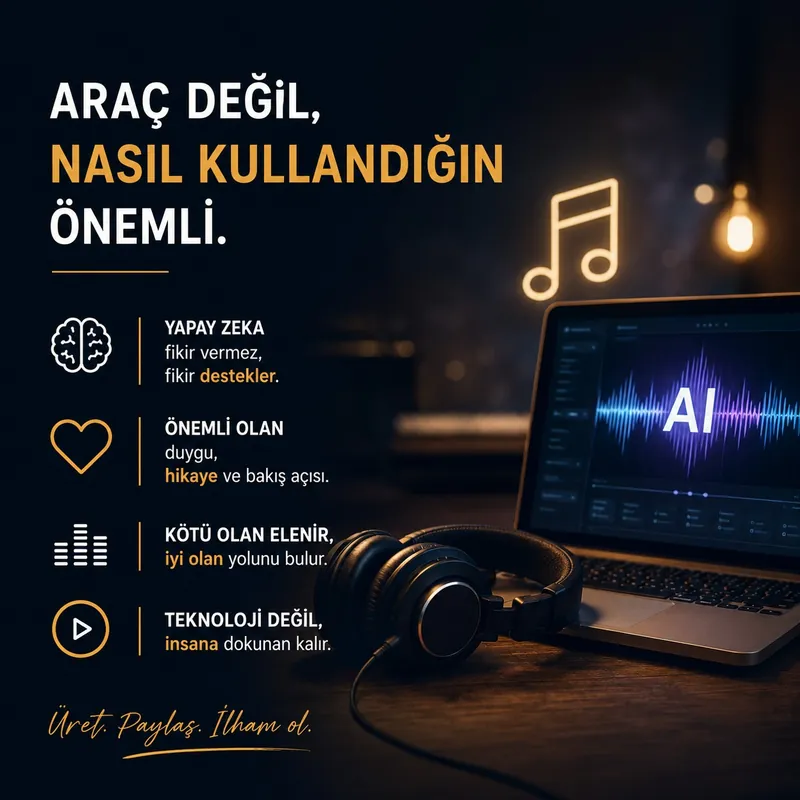

Yapay Zeka ile Üretildi Diye Değersiz mi?
Son zamanlarda bir çalışma paylaştığımda çoğu zaman içeriğin kalitesinden önce şu yorum geliyor:
“Bu zaten yapay zekayla yapılmış.”
İlginç olan şu:
İnsanlar artık ortaya çıkan işe değil, o işin hangi araçla üretildiğine odaklanıyor.
Oysa yıllardır hiçbir yaratım süreci tamamen “çıplak insan emeği” ile ilerlemiyor.
Bir müzik kaydı düşünelim…
Stüdyoda alınan ham ses doğrudan yayınlanmıyor.
EQ uygulanıyor.
Mix yapılıyor.
Mastering sürecinden geçiyor.
Efektler ekleniyor.
Ton düzeltiliyor.
Yani ortaya çıkan şey zaten teknolojiyle şekillenmiş bir üretim.
Video tarafında da durum farklı değil.
Kamera görüntüsü ham haliyle kullanılmıyor.
Kurgu programları,
renk düzenleme araçları,
efekt motorları,
ses işleme yazılımları…
Hepsi üretimin bir parçası.
Kimse bunlara “sahte sanat” demiyor.
Çünkü insanlar zamanla kullanılan araca değil, çıkan sonuca bakmayı öğrendi.
Bugün yapay zekaya verilen tepki bana biraz bunu hatırlatıyor.
Aslında yapay zeka çoğu zaman üretimi ortadan kaldırmıyor.
Sadece üretim süresini kısaltıyor.
Bazı teknik bariyerleri düşürüyor.
Bir fikrin daha hızlı hayata geçmesini sağlıyor.
Ama hâlâ fikir önemli.
Hâlâ bakış açısı önemli.
Hâlâ duygu önemli.
Aynı promptu bin kişi yazabilir.
Ama herkes aynı hikâyeyi anlatamaz.
Çünkü mesele sadece aracı kullanmak değil;
ne anlatmak istediğini bilmek.
Bence gelecekte insanlar şu soruyu sormayı bırakacak:
“Bunu yapay zeka mı yaptı?”
Onun yerine şunu soracak:
“Bende bir şey hissettirdi mi?”
Ve sanatın gerçek ölçüsü de zaten hep buydu.